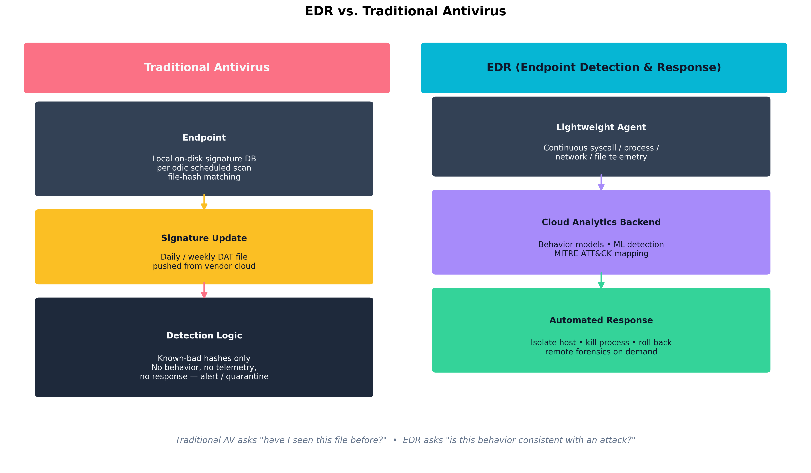
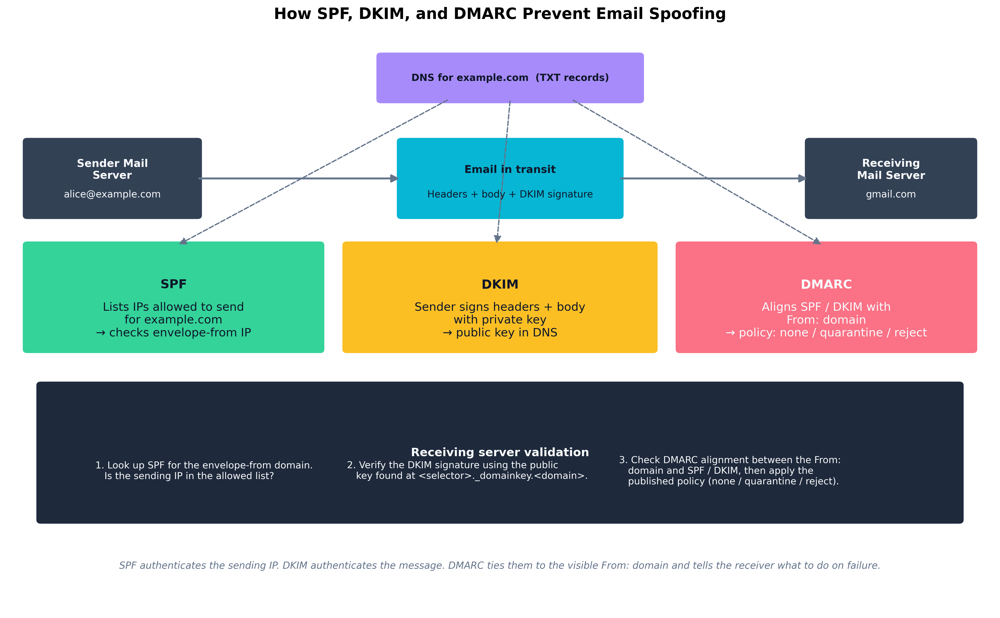

Chapter 9: Network, Endpoint, and Infrastructure Engineering
Learning Outcomes:
- Analyze requirements to enhance the security of endpoints using EDR, anti-malware, and host-based firewalls.
- Troubleshoot complex network misconfigurations, including routing errors, switching errors, and VPN issues.
- Resolve IPS/IDS issues related to rule misconfigurations, placement, and false positives/negatives.
- Investigate and mitigate DNS security vulnerabilities, including DNS poisoning and zone transfers.
- Troubleshoot Transport Layer Security (TLS) errors, cipher mismatches, and PKI integration issues.
- Implement email security protocols, including DKIM, SPF, DMARC, and S/MIME.
- Mitigate DoS and DDoS attacks targeting network and application resources.
- Manage and secure mobile devices using MDM technologies and browser isolation.
- Implement robust change and configuration management processes, utilizing a CMDB and tracking the asset management lifecycle.
- Analyze endpoint and infrastructure TTPs that drive credential theft, privilege escalation, unauthorized execution, lateral movement, and defensive evasion.
Introduction
The previous chapters built a security architecture from the top down: governance, risk, identity, cloud, cryptography. This chapter is about the day-to-day operational substrate that all of those abstractions actually run on — the endpoints employees use, the network that connects them, the core protocols those endpoints depend on, and the management discipline that keeps the inventory honest.
This is also where most attacks are won and lost. A misconfigured firewall rule, a flat VLAN, a domain controller still running on Windows Server 2012, an unsigned email that lands in a CFO’s inbox, an EDR agent quietly disabled six months ago and never re-enrolled — these are not exotic problems. They are mundane, ubiquitous, and the proximate cause of many successful breaches.
We start with change and configuration management, because every other control depends on knowing what you have. Then come endpoint security, where modern EDR has replaced signature-based antivirus as the primary defense; network troubleshooting (routing, VPNs, IDS/IPS); the core services everyone takes for granted (DNS, TLS, email, DDoS); and mobile and remote device management. The throughline is that competent operations beat clever architecture: the question is rarely “do we have the right tool?” but “is it deployed, configured correctly, and producing usable signal?”
How Do We Manage Infrastructure Changes?
Security cannot defend what it does not know about. The discipline of keeping that “what we have” picture accurate, current, and trustworthy is configuration management, and the discipline of changing it without breaking things is change management. Together they are the operational scaffolding that everything else in this chapter rests on.
Change and Configuration Management
A change is any modification to the production environment: a firewall rule edit, a server patch, a Kubernetes deployment, a routing-table tweak, the addition of a new SaaS tenant. Change management is the formal process by which proposed changes are reviewed, scheduled, and recorded.
A mature change-management workflow has four basic steps:
- Request and impact assessment. The proposer documents what is changing, why, what could break, what the rollback plan is, and which other teams are affected.
- Approval. A Change Advisory Board (CAB) — formal in regulated environments, lightweight in startups — approves, defers, or rejects. Pre-approved standard changes (a routine OS patch with a known rollback) skip the CAB to avoid bottlenecking.
- Implementation in a defined window. The change is performed during a scheduled maintenance window with a designated implementer and verifier, not at 4:55 p.m. on a Friday by whoever happens to be available.
- Post-implementation review. Did it work? Did anything else break? The result is recorded against the original change ticket so that future investigators can correlate “the system started failing on Tuesday” with “ah, we deployed change CR-2317 on Tuesday.”
Configuration management is the data side of the same problem: each system has a desired state (declared in a tool like Ansible, Puppet, Chef, Salt, or a Terraform / IaC pipeline) and an actual state (what is really on the machine). The desired state starts from a baseline, an approved hardened configuration such as a CIS Benchmark profile, and configuration drift is any unapproved departure from it. Drift is the fertile ground in which many security failures grow.
Example
A firewall rule change through the full workflow
Juliet Capulet’s team at Verona Health submits change request CR-4417: “Open TCP 6443 inbound from the DevOps VLAN to the Kubernetes API server to enable automated CI/CD deployments.”
- Request and impact assessment. The ticket documents the source/destination pair, the business justification, the rollback plan (delete the rule), and a note that the Kubernetes API server is in PCI and HIPAA scope.
- CAB review. An analyst flags that the DevOps VLAN is shared with a contractor subnet. The rule is narrowed to three specific CI/CD runner IPs before approval.
- Implementation window. The rule is applied at 2 a.m. Sunday. A verification test — a successful
curlfrom an approved runner IP and a confirmed rejection from a non-approved IP — is logged in the ticket.- Post-implementation review. The ticket is closed with the exact rule as implemented, the verifier’s name, and an action item to audit contractor IP assignments in the DevOps VLAN.
Six months later, when an auditor asks “why does port 6443 have an inbound allow rule?”, the answer is one click away — not an educated guess based on who remembers the sprint.
Asset Management Lifecycle, Inventory, and CMDB
The Configuration Management Database (CMDB) is the system of record for every asset and every relationship between assets. Each hardware, virtual, software, or cloud asset is stored as a configuration item (CI) with attributes and links to other CIs. A good CMDB answers questions like: which servers run this application? Which VLAN are they in? Which patch group? Who is the business owner? Which compliance scope (PCI, HIPAA, SOX) does each asset fall under? When does the support contract expire? Inventory is the raw list of what exists; the CMDB adds ownership and relationships. Neither stays accurate by hand, so mature teams feed them with automated discovery (scans, cloud APIs, directory sync, EDR and MDM enrollment).
The asset management lifecycle runs from procurement through disposal:
- Procurement and onboarding. New hardware or software enters the environment, is tagged, registered in the CMDB, and assigned an owner.
- Operation. The asset is patched, monitored, and reviewed against baseline configurations. EDR agents, log shippers, and management tooling are confirmed enrolled.
- Maintenance and reassignment. When a system changes role or owner, the CMDB record is updated. Failure to do this is a leading source of “stale” inventory.
- End-of-life and decommissioning. Drives are sanitized (per Chapter 8), licenses are reclaimed, the asset is marked decommissioned in the CMDB, and its DNS records, firewall rules, certificates, and service accounts are removed. Forgotten end-of-life systems — “disconnected” devices still on the network, still vulnerable, and still trusted by neighbors — recur in serious breaches.
Key Point Every security control in this chapter assumes you know what assets you have. A firewall rule, an EDR agent, a vulnerability scan, an IDS signature — none of them help on a host you do not know exists. The single highest-leverage investment many organizations can make is not a new tool but a CMDB they actually trust.
Warning Shadow IT — assets the security team does not know about — is the usual source of “wait, that server got hit?” moments after a breach. A weekly automated reconciliation between the CMDB, the cloud provider’s inventory APIs, the Active Directory computer list, and the EDR console catches most of it.
Quick Check 9.1
- Recall. What are the four steps in the mature change-management workflow described in the chapter?
- Discriminate. A VM exists in the cloud provider inventory and the EDR console, but not in the CMDB. What operational problem does that reveal?
- Apply. In the TCP 6443 example, name one correction made at the CAB review and one safeguard applied during implementation.
Answers — Quick Check 9.1
- Request and impact assessment, approval, implementation in a defined window, and post-implementation review.
- CMDB drift. The VM is real and monitored, but its owner, patch group, and compliance scope are unrecorded; it may be shadow IT. Reconciliation should have flagged it.
- At CAB review, the rule was narrowed from the shared DevOps VLAN to three CI/CD runner IPs. During implementation, tests confirmed both a successful connection from an approved runner and a rejection from a non-approved source, and the exact rule was logged in the ticket.
How Do We Lock Down Endpoints and Servers?
The endpoint — laptop, server, virtual machine, container — is where users do work, where credentials live, and where attackers eventually want to land. A defended endpoint stack today looks very different from one five years ago: signature-based antivirus has been displaced by behavior-based Endpoint Detection and Response (EDR) and increasingly by Extended Detection and Response (XDR), which correlates endpoint signals with network, identity, and email telemetry.
EDR, HIPS/HIDS, Anti-Malware, and Host Firewalls
Traditional antivirus (AV) matches files against a database of known-bad hashes and signatures. It catches known malware quickly and produces few false positives, but it is essentially blind to anything new — a freshly compiled implant, a living-off-the-land attack using only built-in OS tools, a fileless payload that lives only in memory.
Endpoint Detection and Response (EDR) is a different paradigm. A lightweight agent on every endpoint streams continuous telemetry — process creations, network connections, file operations, registry edits, syscall patterns — to a cloud analytics backend. The backend applies behavioral models, machine learning, and threat-intelligence overlays to detect suspicious sequences, not just bad files. CrowdStrike Falcon, Microsoft Defender for Endpoint, SentinelOne, and Palo Alto Cortex XDR are the dominant commercial offerings.

Figure 9.1: Traditional AV asks “have I seen this file before?” — a question with a yes/no answer based on a static signature database. EDR asks “is this behavior consistent with an attack?” — a question that draws on continuous telemetry, cloud-side analytics, and the ability to respond automatically by isolating the host or terminating a process tree.Host-based defenses fall along a spectrum:
- HIDS / HIPS (Host-based Intrusion Detection / Prevention System). HIDS detects and alerts; HIPS prevents by blocking. Typical functions include file-integrity monitoring and log analysis (open-source examples: Wazuh, OSSEC, AIDE). Modern EDRs perform both, but the terms persist in exams and audit reports.
- Host firewall. Per-host packet filter (the built-in Windows firewall, iptables, nftables, pf). Crucial for limiting lateral movement: a workstation has no business accepting SMB or RDP from another workstation, and a host firewall enforces that even if the network firewall has a permissive internal policy.
- Anti-malware. The signature-and-heuristic component, now usually packaged as one feature within an EDR platform.
- DLP agents. Endpoint Data Loss Prevention agents inspect file operations, copy/paste, USB use, and uploads to detect exfiltration of classified data.
| Capability | Traditional AV | EDR / XDR |
|---|---|---|
| Detection model | Signature / hash match | Behavioral + ML + telemetry |
| Coverage of unknown / fileless | Poor | Strong |
| Telemetry retention | Local logs only | Cloud, weeks to months |
| Response capabilities | Quarantine, alert | Isolate host, kill process tree, roll back, remote shell |
| Threat-hunting support | None | Searchable telemetry, MITRE ATT&CK mapping |
| Operational overhead | Low | Higher — requires tuning and an analyst team |
| Cost | Low | Significant — per-endpoint subscription |
Endpoint Privilege Management, Application Control, SELinux, and Attack Surface Reduction
Beyond detection, several controls reduce what an attacker can do once on the endpoint:
- Endpoint Privilege Management (EPM). Removes local administrator rights from users and elevates only specific approved applications on demand. Tools include CyberArk EPM, BeyondTrust, and Microsoft Intune Endpoint Privilege Management. Windows LAPS complements them by giving every machine a unique, rotated local administrator password.
- Application control / allowlisting. Only approved executables run; everything else is blocked. App Control for Business (formerly Windows Defender Application Control, WDAC) and AppLocker on Windows; tools such as fapolicyd, plus SELinux or AppArmor policy, on Linux. Difficult to deploy on developer workstations, very effective on fixed-purpose servers and kiosks.
- SELinux / AppArmor. Mandatory access
control (MAC) for Linux: each process runs under a confined
policy limiting the files, sockets, and capabilities it may use, so a
compromised service cannot freely read
/etc/shadoweven as root. SELinux (label-based; RHEL, Fedora, Android) runs in enforcing, permissive (logs only), or disabled mode; AppArmor (path-based; Ubuntu, SUSE) is simpler to write. The classic mistake is setting SELinux to permissive to “fix” an application error instead of correcting the policy. - Attack Surface Reduction (ASR). Shrinking what an attacker can reach (unneeded services, ports, software, accounts) and monitoring for newly exposed assets. On Windows, Microsoft Defender’s ASR rules are one implementation, blocking behaviors such as Office applications launching child processes, obfuscated scripts, untrusted executables on USB, and credential theft from LSASS. They are cheap, broadly applicable, and routinely disabled “because they break a vendor tool” — exactly the conversation security teams should be having. Test new rules in audit mode first.
Credential Dumping, Privilege Escalation, Unauthorized Execution, and Defensive Evasion
The TTPs (Tactics, Techniques, and Procedures) that drive endpoint compromise map cleanly onto the MITRE ATT&CK framework:
- Credential dumping (T1003). Tools like Mimikatz extract NTLM hashes, Kerberos tickets, and cached credentials from the memory of LSASS, the Windows process that holds logged-on users’ credentials. Defenses: Credential Guard, LSASS Protected Process Light, removing local admin, EDR detections for LSASS read.
- Privilege escalation. Exploiting kernel CVEs, abusing misconfigured services with weak file permissions, token impersonation. Defenses: prompt patching, least-privilege service accounts, EDR detections for token theft.
- Unauthorized execution. Living-off-the-land
binaries (LOLBins) — built-in tools such as
certutil.exe,regsvr32.exe,mshta.exe, and PowerShellInvoke-Expression— are used to download and run code. Defenses: PowerShell Constrained Language Mode, ASR rules, application allowlisting. - Process injection (T1055). Running malicious code inside a legitimate process (DLL injection, process hollowing) to borrow its privileges and trusted name. Defenses: EDR detection of cross-process memory writes and remote-thread creation, ASR rules, least privilege.
- Defensive evasion. Disabling EDR services, clearing event logs, BYOVD (bring your own vulnerable driver) attacks that load a signed-but-buggy driver to terminate security agents from the kernel. Defenses: tamper protection, vulnerable-driver blocklists, SIEM alerts on EDR-service-stopped events.
Browser Isolation and Configuration Management
The web browser is the modern endpoint’s single largest attack surface. Two complementary controls have emerged:
- Browser isolation. Web content is rendered away from the endpoint, in a remote container or a disposable local VM, and only a safe stream of pixels or sanitized draw commands reaches the user’s browser. Even if a malicious page exploits a renderer vulnerability, the compromise stays inside the disposable environment. Cloudflare Browser Isolation, Menlo Security, and Zscaler Browser Isolation are common implementations.
- Browser configuration management. Centralized policy through Chrome Enterprise, Edge for Business, or Firefox ESR — controlling extensions, certificate trust stores, password storage, sync, download paths, and exception domains. An unmanaged browser is an unmanaged endpoint.
Example
Detecting credential dumping in EDR telemetry
A typical Mimikatz invocation produces a telltale sequence the EDR backend can recognize even if the binary itself is renamed or repacked:
- A non-system process (e.g.,
powershell.exe,notepad.exe) openslsass.exewithPROCESS_VM_READ | PROCESS_QUERY_LIMITED_INFORMATION.- That process performs a sequence of large
ReadProcessMemorycalls covering the address ranges where credential structures live.- The process writes a memory dump (such as
lsass.dmp) to disk or transmits a comparable blob to an external IP.No single step is unambiguous evidence of an attack. The sequence is — a multi-step pattern signature-based AV cannot express but a behavior-based EDR backend can. Even a freshly compiled, never-before-seen dumping tool trips the same fingerprint.
Quick Check 9.2
- Recall. What kinds of telemetry does EDR collect that traditional antivirus generally does not?
- Discriminate.
powershell.exeopenslsass.exe, performs largeReadProcessMemorycalls, and writes a memory-dump file. What attack activity is this, and what detection model catches it best?- Apply. A fixed-purpose server still lets users keep local admin rights and run arbitrary unsigned utilities. Name two controls from the section that would most directly reduce that risk.
Answers — Quick Check 9.2
- Process, network, file, registry, and related behavioral telemetry. EDR watches sequences of activity, not just static file signatures.
- Credential dumping, specifically the kind of LSASS-memory access associated with tools like Mimikatz. A behavior-based EDR model is the best fit.
- Endpoint Privilege Management to remove routine admin rights and application allowlisting or ASR-style execution controls to prevent unapproved binaries and risky child-process behavior.
How Do We Troubleshoot Network Defenses?
Network defenses fail in characteristic ways: rules in the wrong order, sensors in the wrong segment, tunnels that drop fragments, ACLs that hide a quiet asymmetric routing problem behind apparent connectivity. The architect’s job is to recognize the failure modes and produce systems that fail loudly rather than silently.
Resolving IPS/IDS False Positives
A network Intrusion Detection System (IDS) inspects traffic against a rule library and alerts, usually from a copy of the traffic (a SPAN port or TAP); an Intrusion Prevention System (IPS) sits inline and can drop packets. Common engines are Snort, Suricata, and Zeek, plus commercial offerings from Palo Alto, Cisco, and Fortinet. Their tuning problems are universal:
- False positives happen when a legitimate traffic pattern matches an attack signature. A vulnerability scanner running internally will trip dozens of IPS rules; failing to suppress those specific alerts for the scanner’s address creates noise that hides real signal. (Suppress the expected rules for that IP, not all alerts from it.)
- False negatives are worse but harder to see — the attack happened, the IPS did not flag it. Sources include encrypted traffic the IPS cannot inspect, asymmetric routing where the sensor sees only half the conversation, fragmented or out-of-order flows the rule engine does not reassemble correctly, outdated rule sets, and a lack of rules for the protocol or technique in question.
- Rule misconfigurations. A wrong network variable
(such as Snort’s
HOME_NET), noisy rules disabled instead of tuned, oralertactions left wheredropwas intended. Treat rule changes as production changes. - Placement matters. An IPS at the internet edge sees north-south traffic; it cannot detect lateral movement between two servers in the same VLAN. East-west visibility requires either internal sensors, host-based detection, or network segmentation that forces traffic through inspection points. An inline IPS also needs a deliberate fail-open or fail-closed choice for when the device itself fails.
The remedy is a tuning loop: investigate every alert during the initial tuning period (typically several weeks), mark legitimate traffic patterns as exclusions, and keep rule sets current — Emerging Threats and Talos publish frequent updates.
Correcting Routing, Switching, VPN/Tunnel, and ACL Errors
Network misconfigurations break in characteristic ways:
- Asymmetric routing. Outbound packets take one path; return packets take another. A stateful firewall that sees only one direction of a flow treats the other direction’s packets as invalid and drops them, producing connections that never complete or stall midstream. The fix is consistent routing through the firewall pair, often via PBR (policy-based routing), by collapsing the upstream paths, or through firewall state sharing.
- VLAN trunking errors. A trunk port misconfigured as access — or vice versa — produces sporadic connectivity. VLAN hopping abuses loose trunk settings: switch spoofing negotiates a trunk through DTP, and double tagging abuses the native VLAN. Fixes: explicit port modes, DTP off, an unused native VLAN. Spanning-tree mistakes (no BPDU guard or root guard) allow loops or a rogue root bridge.
- VPN MTU/MSS mismatches. Tunnels add overhead, so full-size packets no longer fit. If a device drops the fragments, or a firewall blocks the ICMP “fragmentation needed” messages Path MTU Discovery relies on, large packets silently vanish: “small pages load, large pages hang.” The fix is MSS clamping, lowering the TCP segment size the tunnel advertises (roughly 1350–1400 bytes is typical for IPsec).
- VPN negotiation failures. Tunnels that never come up usually trace to mismatched IKE/IPsec proposals (encryption, hash, or DH group), wrong pre-shared keys or expired certificates, or blocked NAT traversal (UDP 4500).
- ACL ordering. Most firewall and ACL engines evaluate top-down with first-match. A permissive rule above a restrictive rule silently overrides it. Audit rules in order, not as a set, and end every list with an explicit, logged deny.
- Insecure routing. Routing protocols that trust any neighbor let an attacker inject routes and pull traffic through a device they control: unauthenticated OSPF or RIP on user-facing ports, BGP with no prefix filters or RPKI validation (behind many hijacks and leaks), and enabled IP source routing. Authenticate adjacencies, filter and validate BGP prefixes, and disable source routing.
Lateral Movement Paths, Remote Administration Abuse, and Identity-Impacting Infrastructure Drift
A single compromised endpoint should not be able to reach every other endpoint in the environment, but on a flat network it can. The structural defenses are:
- Network segmentation. Workstations live in one VLAN, servers in another, OT/IoT devices in their own. Inter-VLAN traffic crosses a firewall.
- Microsegmentation. Per-workload policy enforced at the host or hypervisor (NSX, Illumio, Cisco Secure Workload). Defaults to deny; explicit allow lists describe permitted flows.
- Just-in-time remote administration. PAM-issued, time-boxed credentials for RDP/SSH; jump hosts that log every session; disabling SMB v1 and restricting WinRM to specific admin subnets.
- Domain controller hygiene. Tier-0 admin accounts log in only from privileged access workstations; service accounts use group-managed service accounts with auto-rotated passwords; legacy NTLM is disabled where possible.
Infrastructure drift — a firewall rule added “temporarily” for a project that ended two years ago, an old VPN account still enabled, a service principal granted excess permissions during an incident response and never trimmed — is the silent enemy of identity hygiene. Quarterly access reviews and IaC-managed firewall configurations are the practical countermeasures.
Improving Observability and Sensor Coverage
A network you cannot see is a network you cannot defend. Practical observability layers:
- NetFlow / IPFIX / sFlow. Per-flow metadata (5-tuple, byte counts, durations) at every router or switch (sFlow samples packets rather than tracking every flow).
- Packet capture. Full-fidelity capture at chokepoints (perimeter, between trust zones, in front of crown-jewel applications). Storage is expensive; rolling buffers and selective triggers help.
- DNS query logs. Recursive resolver logs are an extraordinarily high-leverage source — most malware beacons resolve a domain before connecting, so DNS catches what later layers miss.
- TLS metadata (JA3/JA4 fingerprints, SNI). Even when content is encrypted, the way a client builds its TLS handshake (JA3, and the more robust JA4) fingerprints the software behind it, and SNI names the destination (though Encrypted Client Hello is gradually hiding it).
- Endpoint and server logs. Windows event logs,
Sysmon, and Linux
auditdforwarded in near real time to a SIEM, so an attacker who clears the local logs cannot erase the history.
Case Study
WannaCry (May 2017): Network Propagation Through Unpatched SMB
On Friday, May 12, 2017, self-propagating ransomware named WannaCry began spreading across the internet at unprecedented speed. Within 24 hours it had infected more than 230,000 computers in 150 countries — including the UK National Health Service (NHS), which cancelled an estimated 19,000 appointments and diverted ambulances from affected hospitals; Telefónica; FedEx; Renault; Russia’s Interior Ministry; and a long list of other organizations whose Friday afternoon ended in ransom screens (Microsoft Security Response Center 2017; National Audit Office 2017).
The technical pattern was a textbook case of every theme in this section. The exploit at the core was EternalBlue, which targeted a flaw in Microsoft’s SMBv1 implementation (CVE-2017-0144). It was widely reported to have been developed by the U.S. National Security Agency and was leaked publicly by the Shadow Brokers group in April 2017. Microsoft had released the patch (MS17-010) in March — two months before WannaCry — but many organizations had not applied it. The NHS in particular was running large numbers of unpatched Windows 7 systems (and some Windows XP) behind under-resourced IT teams, with SMBv1 enabled and, at many sites, internal networks flat enough for workstations to talk SMB to one another (Microsoft Security Response Center 2017; National Audit Office 2017).
Once a single host was compromised, the worm scanned for port 445 — both random internet addresses and the local subnet — and propagated to every unpatched Windows host it could reach, with no user click required. Where internal networks were flat, a single-host compromise became an enterprise outage.
The first wave was halted, more or less by accident, when British researcher Marcus Hutchins (working under the handle MalwareTech) discovered an unregistered domain inside the malware’s code that it contacted before encrypting. The domain functioned as a kill switch — Hutchins registered it for $10.69, and every infection that successfully resolved the domain immediately ceased encryption. Variants with the kill switch removed were reported within days, but the initial wave was already contained. In December 2017 the U.S. and U.K. governments attributed the attack to North Korea, and in 2018 the U.S. Department of Justice charged a North Korean programmer, Park Jin Hyok, of the Lazarus Group, in a complaint covering WannaCry (U.S. Department of Justice, U.S. Attorney’s Office for the Central District of California 2018).
The post-incident lessons are exactly the operational disciplines this chapter has been arguing for:
- Patching matters even when it is inconvenient. MS17-010 had been available for two months. The failure to deploy it was an operational problem — legacy dependencies, thin budgets, and no central body able to mandate action — not a missing capability. Before the attack, NHS Digital had assessed 88 of England’s 236 trusts on site, and none had passed its cyber-security assessment (National Audit Office 2017).
- Network segmentation contains blast radius. The worm needed a reachable port 445. Every filtered path between workstations was a place it could not go; every flat network was a place it could go anywhere.
- Unpatched and end-of-life systems are time bombs. Windows XP had been out of support for three years, but analyses of infected machines found that most were unpatched, still-supported Windows 7 systems; XP machines more often crashed than were encrypted. The lesson is patch discipline as much as lifecycle. Microsoft still took the “highly unusual step” of releasing updates for platforms in custom support only, including XP and Server 2003 (Microsoft Security Response Center 2017).
- Egress and DNS visibility help even mid-attack. Once Hutchins registered the kill-switch domain, DNS queries from infected hosts around the world flowed to his sinkhole, letting researchers watch the outbreak in real time.
Quick Check 9.3
- Recall. Give one common cause of IDS/IPS false positives and one common cause of false negatives from the section.
- Discriminate. Users say “small pages load, large pages hang” across an IPsec tunnel. Which network problem fits that symptom best?
- Apply. A hospital still has unpatched SMB-reachable Windows hosts on a flat internal network. Name two controls from the chapter that would most directly limit WannaCry-style spread.
Answers — Quick Check 9.3
- A false positive example is legitimate internal scanner traffic matching attack signatures. A false negative example is encrypted or asymmetric traffic the sensor cannot fully inspect.
- An MTU or MSS mismatch across the tunnel. The fix is typically MSS clamping so large packets stop fragmenting and failing.
- Patch or retire the vulnerable SMB systems and segment or firewall workstation-to-workstation SMB paths. Host firewalls and disabling legacy SMB behaviors also cut the worm’s blast radius.
How Do We Secure Core Network Services?
DNS, TLS, and email are the protocols an enterprise depends on without thinking about them. Each was designed in an earlier, more trusting era of the internet, and each has been retrofitted with cryptographic and policy controls that must be deliberately enabled.
DNS Security (DNSSEC, Poisoning, Sinkholing, Zone Transfers)
DNS resolves names to addresses. Without protection, any answer at any step of the recursive lookup can be forged.
- DNSSEC signs DNS records using public-key cryptography rooted at the DNS root zone. It provides authenticity and integrity, not confidentiality: validating resolvers reject forged or tampered responses, but queries remain readable. Adoption has been slower than hoped — DNSSEC adds operational complexity and key management — but it is the main protection against DNS forgery.
- DNS poisoning / cache poisoning. An attacker injects a forged answer into a recursive resolver’s cache. The Kaminsky attack (2008) was the canonical demonstration. Modern resolvers mitigate by randomizing query IDs and source ports (some also randomize the case of the query name), and DNSSEC validation rejects forged answers outright.
- DNS sinkholing. A defensive technique in which the corporate resolver returns deliberately invalid answers (or a controlled “sinkhole” address) for known-bad domains. Often implemented with DNS Response Policy Zones (RPZ) and used against C2 infrastructure, malicious advertising domains, and DGA-generated names.
- Zone transfers (AXFR/IXFR). Bulk replication of DNS zone data between authoritative servers. Should be restricted by IP and/or TSIG. Open AXFR queries on public-facing nameservers leak the entire internal naming map of a company — a recurring finding on penetration tests.
- DoH / DoT (DNS over HTTPS / TLS). Encrypts the DNS conversation between client and resolver. Improves user privacy; complicates corporate visibility, since traditional DNS log capture no longer sees the queries.
TLS Troubleshooting (Cipher Mismatch and PKI Issues)
TLS handshake failures fall into a small number of root causes, all
of which the architect should be able to diagnose from
openssl s_client or a packet capture:
- Cipher / version mismatch. The client offers ciphers or versions the server does not support: the server may have correctly disabled TLS 1.0/1.1 (Moriarty and Farrell 2021) and legacy suites such as RC4 and 3DES, or a corporate proxy may enforce TLS 1.2-only against a service that has moved to 1.3-only. Solution: align supported versions, favor TLS 1.3 with a 1.2 fallback during transition, and upgrade old clients rather than re-enabling weak suites.
- Untrusted issuer. The server’s certificate chains to a CA the client does not trust. Common in internal deployments where a private CA is missing from a server’s or container image’s trust store, or where a TLS-inspection proxy re-signs traffic with a CA the application does not trust. A server that omits its intermediate certificate causes the same symptom.
- Hostname mismatch. The certificate’s SAN does not include the requested hostname. Fix the SAN list, not the client.
- Expired or not-yet-valid certificate. The Mad Hatter case study from Chapter 8. Expiration monitoring and automated renewal (ACME) are the operational answers, and they matter more each year: public TLS certificates are capped at 200 days since March 2026, 100 days from March 2027, and 47 days from March 2029 (CA/Browser Forum 2025).
- Revoked certificate. Detected through CRLs or OCSP / OCSP stapling (Chapter 8). The public web is shifting from OCSP toward CRLs, so check which mechanism your clients actually use (CA/Browser Forum 2023; Let’s Encrypt 2025).
- Cryptographic implementation flaws. Sometimes the protocol and certificates are fine but the code using them is not: an application that “temporarily” disables certificate or hostname validation, a library bug such as Heartbleed (CVE-2014-0160) in OpenSSL, a homegrown crypto routine, a weak random-number source, or AES-GCM nonce reuse (Chapter 8). Use maintained libraries with their secure defaults, keep them patched, and test that invalid certificates are actually rejected.
- Clock skew. A client whose clock is hours off rejects valid certificates. NTP/Chrony hygiene matters more than people expect.
Email Security (DKIM, SPF, DMARC, S/MIME)
Email was designed without authentication. Three layered controls have been bolted on, and they only work together:
- SPF (Sender Policy Framework). A DNS TXT record
listing the IP addresses authorized to send email for a domain.
Receivers check the connecting IP against the list for the envelope
sender (
MAIL FROM) domain, which is not necessarily theFrom:address users see. SPF authenticates the sending server, not the message, and breaks on forwarding. It also allows at most ten DNS lookups, so too manyinclude:entries cause a permanent error, a classic troubleshooting case. - DKIM (DomainKeys Identified Mail). The sending
server computes a cryptographic signature over selected headers and the
body, then publishes its public key in DNS. Receivers verify the
signature. DKIM authenticates the message itself and normally
survives forwarding unless the forwarder alters the signed content. The
signature names the signing domain (
d=) and a selector that locates the public key (selector._domainkey.domain). - DMARC (Domain-based Message Authentication, Reporting, and
Conformance). A DNS-published policy that ties SPF and DKIM to
the visible
From:domain (Kucherawy and Zwicky 2015). A message passes if SPF or DKIM both passes and is aligned: the domain SPF authenticated (the envelope sender) or DKIM signed (d=) must match theFrom:domain. If neither does, the receiver applies the policy:none(monitor only),quarantine(junk folder), orreject(refuse delivery). Domains normally start atnone, read the reports, fix legitimate senders they forgot, and only then tighten.ruareports are aggregate summaries of all mail claiming the domain, passing and failing;rufreports are copies of individual failures, which many large receivers do not send for privacy reasons.

Figure 9.2: SPF, DKIM, and DMARC are layered defenses against email spoofing. SPF authenticates the sending IP, DKIM authenticates the message contents, and DMARC ties both back to the visibleFrom: domain — telling the receiving server which policy to
apply on failure.
S/MIME — covered in Chapter 8 — is a different layer entirely: it provides end-to-end signing and encryption between specific senders and recipients using X.509 certificates. SPF/DKIM/DMARC authenticate the sending domain; S/MIME authenticates an individual person and, when used for encryption, keeps content confidential from everyone but the recipient.
These controls are now baseline requirements. Since February 2024,
Google and Yahoo have required bulk senders (Google’s threshold is
5,000+ messages a day) to authenticate with SPF and DKIM, publish DMARC,
and support one-click unsubscribe, and Microsoft began enforcing similar
rules for Outlook.com in May 2025 (Google 2024; Microsoft Outlook Team 2025). Two
optional layers build on them: MTA-STS lets a domain
require TLS with a valid certificate for inbound mail, blocking
downgrade attacks between mail servers (Margolis et al. 2018), and
BIMI shows a verified brand logo, but only for domains
enforcing DMARC at quarantine or reject.
| Attack | Mechanism | Primary Mitigation |
|---|---|---|
| Direct spoofing | Forged From: from arbitrary
IP |
DMARC reject with aligned SPF
or DKIM |
| Display-name spoofing | “CFO Name” with attacker email | User training + mailbox banner for external senders |
| Lookalike domain | paypa1.com,
rnicrosoft.com |
Domain monitoring, secure email gateway lookalike detection |
| Compromised internal account | Real authenticated send | Phishing-resistant MFA + UEBA / impossible-travel detection + DLP egress rules |
| Reply-chain hijack | Attacker with a stolen mailbox (or lookalike domain) replies inside a real thread | Mailbox MFA + thread-anomaly detection + link and attachment sandboxing (DMARC still passes when the sender is genuinely compromised) |
| Malicious attachment | Macro-enabled doc, ISO, LNK | ASR rules, attachment sandboxing, Mark-of-the-Web enforcement |
| Phishing link | URL → credential capture page | URL rewriting + sandbox detonation, browser isolation, FIDO2 |
Example
What SPF, DKIM, and DMARC look like in DNS — and what happens when a spoofed message arrives
Three DNS records protect
verona-health.org:verona-health.org TXT "v=spf1 include:_spf.google.com ip4:203.0.113.20 -all" google._domainkey.verona-health.org TXT "v=DKIM1; k=rsa; p=MIIBIjANBgkq..." _dmarc.verona-health.org TXT "v=DMARC1; p=reject; rua=mailto:dmarc@verona-health.org"The SPF record authorizes Google’s mail servers and one specific IP (
203.0.113.20) to send for the domain; anything else is a hard fail (-all). The DKIM record publishes the public key (selectorFrom:domain — and to send aggregate reports back to the security team.When a phishing campaign sends “From: cfo@verona-health.org” from a rented VPS, one of two things happens. If the attacker forges the envelope sender too, SPF fails because the VPS IP is not listed. If the attacker uses their own domain as the envelope sender, SPF may pass — but for the attacker’s domain, which does not match the
From:domain, so the pass is not aligned. Either way, the attacker cannot produce a DKIM signature forverona-health.orgwithout its private key. With no aligned pass, DMARC appliesp=rejectand the message never reaches the inbox, and the aggregate report logs the attempt for the security team’s weekly review. (Verona reachedp=rejectonly after months atp=none, using those reports to find legitimate senders it had forgotten.)
Quick Check 9.4
- Recall. What do SPF, DKIM, and DMARC each validate or enforce? Separately, what does an authoritative nameserver that answers AXFR requests from anyone on the internet expose?
- Discriminate. A bulk-mail vendor’s messages pass SPF and DKIM for the vendor’s own domain, but their visible
From:address is@verona-health.org. Underp=reject, are they delivered? Why?- Apply. A phishing campaign sends mail that appears to come from the CFO’s domain using a rented VPS. Name three layered controls from the section that should block or blunt that attack.
Answers — Quick Check 9.4
- SPF validates authorized sending IPs,
DKIM validates the message signature, and
DMARC aligns those checks with the visible
From:domain and tells receivers what to do on failure. An open AXFR exposes the entire zone contents, leaking the organization’s naming map and host inventory for reconnaissance. - No. The checks passed, but for the vendor’s domain,
so neither is aligned with
From:. The fix is a DKIM key forverona-health.org(or a delegated subdomain) at the vendor. - DMARC with aligned SPF or DKIM (stops direct spoofing), secure-email controls such as lookalike-domain detection and link or attachment sandboxing, and post-delivery controls such as browser isolation and phishing-resistant FIDO2 authentication (which defeat credential theft) all reduce the attack’s chance of succeeding.
DoS/DDoS and Resource Exhaustion
A Denial of Service (DoS) attack consumes a resource (bandwidth, connections, CPU, memory) until legitimate users cannot use the service. Distributed DoS (DDoS) does so from many sources simultaneously, defeating simple IP blocking. Categories:
- Volumetric. Saturating bandwidth with raw packets (UDP floods, DNS or NTP amplification). Mitigated upstream — at the ISP, the cloud provider’s scrubbing center, or services like AWS Shield, Cloudflare, or Akamai Prolexic.
- Protocol. Exhausting connection state in servers, firewalls, and load balancers (SYN floods, ACK floods). Mitigated by SYN cookies, connection limits, and stateful proxy layers.
- Application-layer (Layer 7). Targeted requests that look legitimate but exhaust application resources — expensive search queries, unauthenticated POST floods, slow-request attacks such as Slowloris, and the HTTP/2 Rapid Reset floods of 2023. Mitigated by WAFs, rate limits, CAPTCHA, and adaptive defenses tuned per endpoint.
The general defense is layered absorption: a CDN + WAF in front, rate limits at the API gateway, autoscaling backends with circuit breakers, and an incident playbook that includes upstream provider contacts before the attack happens. Resource exhaustion also happens without an attacker (a memory leak, a full log volume, an exhausted DHCP scope), so quotas and capacity alerts belong to the same defense.
How Do We Manage Mobile and Remote Devices?
Phones, tablets, and laptops outside the office are the modern enterprise’s most awkward attack surface. They carry corporate data, authenticate to corporate identity systems, and travel into uncontrolled networks every day.
MDM Technologies and App Containment
Mobile Device Management (MDM) — and the broader category of Unified Endpoint Management (UEM) — gives IT a central control plane over enrolled devices. Microsoft Intune, Jamf, Omnissa Workspace ONE (formerly VMware), and Google’s endpoint management in Google Workspace are common platforms. NIST’s current enterprise mobile-device and BYOD guidance treats centralized management, policy enforcement, and app/container controls as foundational safeguards (Howell et al. 2023; Boeckl et al. 2023). Capabilities typically include:
- Configuration profile push. Wi-Fi, VPN, certificate, and policy profiles delivered automatically.
- App management. Deploy, update, and remove approved apps; block specific risky apps; require apps to be installed from managed stores.
- Compliance enforcement. Require disk encryption, biometric unlock, current OS version, no jailbreak/root, a mobile threat defense or EDR agent present and reporting; non-compliant devices lose conditional access (Chapter 5) (Howell et al. 2023; Boeckl et al. 2023; Rose et al. 2020).
- Selective wipe. On a BYOD device, wipe only the corporate container — work email, files, app data — without touching the user’s personal photos and contacts. Critical for the legal-and-employee-relations side of BYOD.
- App containerization. Work data lives in a sandboxed container: an Android Enterprise work profile, an iPhone or iPad enrolled with Apple User Enrollment (managed data kept separate from personal data), or apps governed by Intune App Protection policies, which work even on unenrolled devices. Copy/paste, screenshots, and “save to” actions from work apps into personal apps are blocked.
The deployment models that matter fall into two camps:
- COBO (Corporate-Owned, Business-Only) / COPE (Corporate-Owned, Personally Enabled). The company owns the device and has full control. Easiest model for security; most expensive and least flexible for users.
- BYOD (Bring Your Own Device). The user owns the device and the company manages a container on it. Cheaper and more popular with employees; legally sensitive and operationally intricate.
Case Study
Juliet Capulet’s BYOD MDM Rollout at Verona Health
Juliet Capulet, security awareness trainer at Verona Health (a 4,000-employee regional hospital network), is the operational lead on a BYOD initiative that has been simmering for two years. Clinicians want to use their personal phones for secure messaging, on-call notifications, and electronic health record (EHR) access at bedside. The CFO wants to stop buying corporate phones for every nurse. The CISO wants to make sure the next breach report does not name Verona Health.
The pre-rollout state is bad. Several hundred clinicians have already self-enrolled their phones in the EHR vendor’s mobile app using their AD passwords; there is no MFA, no device posture check, and no way to know which devices are jailbroken or running an unpatched OS. Lost-phone incidents are reported to IT roughly once a month and to the privacy office almost never.
Juliet’s program runs in four phases over six months.
Phase 1 — Policy. Verona’s legal team writes a BYOD acceptable-use agreement. The crucial provisions: the company may wipe the corporate container on demand; the company will not access personal data, location, or browsing; lost or stolen devices must be reported within 24 hours; jailbroken devices are prohibited; and the OS must stay within two major versions of current. Each user e-signs the agreement before enrollment proceeds.
Phase 2 — Technology. Microsoft Intune is the chosen MDM, integrated with Microsoft Entra ID (formerly Azure AD) for conditional access. The corporate container approach (Intune App Protection on iOS, Work Profile on Android) is mandated; full-device management is offered as an option for the small number of executives who are issued company-paid phones. EHR access requires a managed device, FIDO2 or Authenticator app MFA, recent OS, encryption enabled, and a mobile threat-defense agent (Defender for Endpoint on iOS and Android) reporting. A non-compliant device is blocked at sign-in by conditional access (Howell et al. 2023; Boeckl et al. 2023; Rose et al. 2020; National Institute of Standards and Technology 2025).
Phase 3 — Pilot and rollout. The pilot covers two clinical units (forty users) for thirty days. Two issues surface: (1) some older Android devices can’t run the required security agent, and (2) the mandatory PIN interferes with one-handed phone use during patient care. Juliet adjusts: a hardship process (corporate device issued instead) and a biometric unlock option that satisfies the spirit of the PIN requirement. Rollout proceeds in waves of 500 users per week.
Phase 4 — Operations. A monthly report from Intune feeds into the security council: enrollment rate, compliance posture, incident counts (lost devices, attempted access from non-compliant devices), and selective wipes performed. The first month’s report shows 38 lost-phone reports — against roughly one a month before the program — which Juliet correctly interprets not as a worsening problem but as an improving reporting culture. A selective-wipe command was issued for each phone within an hour of its report. Online phones were wiped almost immediately; for those switched off or out of coverage, the command waited until the device next reached a network — one reason the policy demands a report within 24 hours.
Six months in, Verona Health has 3,700 enrolled devices, zero successful unauthorized EHR mobile accesses, and a CFO whose phone bill dropped by $180,000 a year. The CISO writes a one-paragraph note for the next board meeting describing the program as “the most boring success of the year” — by which she means it has produced no incidents to talk about, which is exactly the goal.
Chapter Review and Conclusion
Operational security — the unglamorous work of inventory, change control, patching, hardening, and monitoring — is what most organizations do worst and what attackers most reliably exploit. The architectures of the previous chapters only deliver value when the endpoints are running an EDR that has not been disabled, the network is segmented enough that one compromised host does not become every host, the DNS and email infrastructure are configured to reject forgery, and every device that touches corporate data — including the ones in employees’ pockets — is enrolled, posture-checked, and wipeable. The common thread is management discipline: deploying, configuring, and maintaining the tools an organization already has.
Key Terms Review
- Change Management: Formal process for proposing, approving, scheduling, implementing, and reviewing modifications to production systems.
- Change Advisory Board (CAB): The group that reviews, approves, defers, or rejects proposed non-standard changes.
- Configuration Management: Keeping systems in a known, approved state (a baseline) and detecting configuration drift from it.
- Configuration Management Database (CMDB): The system of record for assets (configuration items) and relationships among them; the substrate every other security control depends on.
- Asset Management Lifecycle: Procurement → operation → maintenance → decommissioning, recorded against the CMDB.
- EDR (Endpoint Detection and Response): Behavior-based endpoint security platform combining a lightweight agent, cloud analytics backend, and active response capabilities.
- XDR (Extended Detection and Response): EDR extended with network, identity, email, and cloud telemetry for cross-domain detection.
- HIDS / HIPS: Host-based intrusion detection / prevention systems (file-integrity monitoring, log analysis, blocking); older terminology whose functions EDR platforms now include.
- Host Firewall: Per-host packet filter; critical for limiting lateral movement.
- Endpoint Privilege Management (EPM): Removes local administrator rights and elevates approved applications on demand.
- Application Allowlisting: Only approved executables run (App Control for Business / WDAC, AppLocker, fapolicyd).
- SELinux / AppArmor: Linux mandatory access control confining processes to defined policies; SELinux runs in enforcing, permissive, or disabled mode.
- Attack Surface Reduction (ASR): Removing what an attacker can reach and monitoring for new exposure; on Windows, Defender ASR rules block specific risky behaviors at the OS level.
- Credential Dumping: Extraction of credentials from process memory or system stores (Mimikatz, LSASS read).
- Living-off-the-Land Binaries (LOLBins): Built-in OS
tools used by attackers to avoid dropping new files
(
certutil,regsvr32,mshta, PowerShell). - Process Injection: Running malicious code inside the memory of a legitimate process to borrow its privileges and hide.
- BYOVD: Bring Your Own Vulnerable Driver — loading a signed but buggy driver to disable kernel-protected security agents.
- Browser Isolation: Remote rendering of web content so renderer compromises cannot reach the user’s endpoint.
- IDS / IPS: Network intrusion detection (out-of-band, alerts) / prevention (inline, can block) systems running rule-based and behavioral analysis at chokepoints.
- Asymmetric Routing: Outbound and return traffic taking different paths; commonly breaks stateful firewalls.
- VLAN Hopping: Attack exploiting trunk-port misconfiguration to reach segments that should be unreachable.
- MSS Clamping: TCP option adjustment to avoid fragmentation across VPN tunnels with smaller MTU.
- Insecure Routing: Routing protocols or configurations that accept unauthenticated or unvalidated updates, enabling route injection and hijacking.
- Microsegmentation: Per-workload network policy enforced at the host or hypervisor.
- DNS Cache Poisoning: Injecting a forged answer into a resolver’s cache so users are sent to attacker-chosen addresses.
- DNSSEC: Cryptographic signing of DNS records to prevent forgery.
- DNS Sinkholing: Defensive DNS responses redirecting queries for known-bad domains to controlled addresses.
- Zone Transfer (AXFR): Bulk DNS zone replication; must be restricted lest internal naming maps leak.
- DoH / DoT: DNS over HTTPS / TLS; encrypts DNS resolution traffic.
- SPF (Sender Policy Framework): DNS record listing IPs authorized to send email for a domain.
- DKIM (DomainKeys Identified Mail): Cryptographic signature over email headers and body verified via DNS-published public keys.
- DMARC: Policy framework requiring an aligned SPF or
DKIM pass for the visible
From:domain and instructing receivers how to handle failures. - S/MIME: Certificate-based signing and encryption of individual email messages between specific senders and recipients.
- DDoS — Volumetric / Protocol / Application: Three categories of denial-of-service attack, each requiring different mitigations.
- MDM / UEM: Mobile (or Unified) Endpoint Management; centralized control plane for enrolled mobile and desktop devices.
- Selective Wipe: Removal of corporate container contents on a BYOD device without touching personal data.
- App Containerization: Sandboxed work data on personal devices (iOS Managed Apps, Android Work Profile).
- COBO / COPE / BYOD: Corporate-Owned Business-Only / Corporate-Owned Personally Enabled / Bring Your Own Device — three deployment models with distinct security and policy implications.
Practice-Based Questions
Apply The Chapter
Juliet Capulet Rolls Out BYOD at Verona Health
Design PBQ. Map each item in a CISO’s pre-rollout gap memo to its control — selective wipe, containerization, conditional access, FIDO2, per-SSID VLAN, DMARC, DNSSEC.
Diagnose The Failure
Juliet Reviews the Imaging-Department Ransomware
Diagnostic PBQ. The BYOD program shipped, then radiology gets ransomwared anyway — through a portal nobody locked and an enclave a vendor un-fenced with a patch cable. Walk backward through both doors.
Synthesis Activities
These are open-ended activities meant to extend the chapter beyond what a search engine — or a chatbot — can answer on its own. Each works individually or in a group; the goal is the conversation, the debate, or the artifact, not a paper about it. Activities marked with No one to interview? or Studying alone? sidebars include AI-based alternatives — used here as a sparring partner, role-player, or facilitator, not as a source.
Conduct an Interview (1 hour)
Talk to someone who runs network or endpoint defenses for a living — a network engineer, EDR analyst, infrastructure operations lead, MDM administrator, or anyone whose job involves keeping a fleet of devices configured and a network observable. A few questions worth asking, in roughly this order:
- Walk me through what your asset inventory actually looks like. How accurate is it on any given day, and what makes it drift?
- When you investigate suspicious endpoint activity, what telemetry sources do you reach for first, and which ones consistently fail you?
- Where on the network do you have the worst visibility, and why has that gap not been closed?
- What’s a “false positive” pattern you have learned to recognize that newer analysts always chase down?
- What’s one thing the network and endpoint security textbooks get wrong about how this work actually gets done?
Listen for the gap between defense-in-depth as drawn (firewalls, IDS, EDR, MDM) and defense-in-depth as operated, where the limiting factor is almost always coverage gaps, alert fatigue, and the assets nobody is sure exist.
No one to interview? Run the conversation with a chatbot in role. A prompt that works: “You are a senior network and endpoint security engineer at a mid-sized enterprise. You manage the EDR rollout, the asset inventory, and the egress filtering policy. You have lived through one incident where the gap between asset inventory and reality turned a small compromise into a long one. I’m interviewing you for a class. Answer in character. When I ask something a real engineer would not actually know — especially about vendor-specific feature details — say so.” The rehearsal exposes which of your questions are vague about which layer of the stack they’re really asking about.
Hold a Debate (1 hour)
Pick the position you find least sympathetic and argue it as well as you can:
- Endpoint Detection and Response is the most consequential network and endpoint control of the last decade. Any organization without modern EDR is operating blind, regardless of how mature their network controls look on paper.
- EDR has become a vendor monoculture risk. The same agent runs on every laptop in the company; a faulty update, vulnerability, or supply chain compromise in that agent is a near-instant enterprise-wide failure — as the July 2024 CrowdStrike content-update outage, which Microsoft estimated crashed about 8.5 million Windows devices, showed (Weston 2024). The historical wisdom of diverse, layered controls has been quietly abandoned.
- The whole framing is wrong. EDR and modern endpoint controls solve last decade’s problem (malware on laptops) while attackers have moved to identity, SaaS, and cloud control planes. Investing further in endpoint telemetry is fighting the last war; the next dollar belongs in identity logging and cloud audit trails.
The exercise only works if you defend the position you don’t already hold. In class, assign positions and go live; the surprise of having to think on your feet is the point.
Studying alone? Sketch your argument, then ask a chatbot to attack it from the opposite position. A prompt that produces real sparring: “Take the opposite position from the argument below and attack it as aggressively as a senior detection engineer who deeply disagrees. Cite real EDR-related incidents, real vendor outages or compromises, real shifts in attacker tradecraft toward identity and cloud. Don’t be polite. After each of my replies, escalate.” The goal isn’t to beat the model. It’s to find out which parts of your case fold under pressure.
Track a Current Debate (20 min)
Find a network or endpoint security event from the last six months. Good hunting grounds: CISA advisories on widely exploited edge devices (VPN appliances, firewalls, load balancers), EDR vendor security disclosures, post-mortems on globally-disruptive endpoint agent failures, advisories on DNS, email-authentication (DMARC, BIMI), or routing incidents (BGP hijacks), and reports on DDoS campaigns from vendors like Cloudflare, Akamai, and AWS Shield. Be ready to explain to a classmate, in two minutes, what happened, which network or endpoint layer was decisive, and what other organizations are doing differently as a result. Bring two primary sources you’d point them to if they wanted to read further.
Lab Artifact: Analyze a Real Malware Traffic Capture (20 min)
Brad Duncan’s Malware Traffic Analysis site has published packet captures and detailed writeups of real malware infections for over a decade. The writeups alone — even without opening the pcap — are an unusually direct way to see what a network compromise looks like on the wire.
- Go to malware-traffic-analysis.net. Open the most recent “Traffic Analysis Exercise” or any blog entry from the last twelve months that describes a malware infection.
- Read the writeup carefully. Identify, in your own words: the delivery mechanism (phishing email, drive-by, malvertising), the initial network behavior of the malware (callback to a command-and-control server, DNS lookups to suspicious domains, HTTP requests with characteristic headers), and the indicators of compromise the analyst extracted (IPs, domains, file hashes, URLs).
- For each indicator, identify which network or endpoint control from this chapter would have detected or blocked it: DNS sinkholing, egress filtering, TLS inspection, EDR file telemetry, email gateway, NIDS signature, DMARC alignment failure.
- Then answer: which single control, if it had been working perfectly, would have stopped this infection earliest in the chain? What does it tell you about defense-in-depth that no single control consistently catches every step?
Safety: Read the writeups. Do not download the pcap or malware sample files to your own machine unless you are working in a properly isolated analysis environment that you own. The writeups contain everything you need for this exercise.
Model a Local System (2+ hours)
Pick a system you actually use — your school’s network, your home network, a small business or community organization’s network you have permission to observe — and sketch its network and endpoint security posture from what you can observe.
Document what you can tell from outside without probing:
- Asset inventory. What devices are visible from where you sit? How would the operator know if a new device appeared on the network? How long would it take?
- Edge defenses. What sits between this network and the internet — firewall, ISP CPE, VPN appliance? What can you tell about its vendor and capabilities from observable behavior?
- Egress filtering. Try to identify outbound services that are blocked or restricted (DNS over HTTPS to non-corporate resolvers, arbitrary TCP ports, peer-to-peer). What does the pattern tell you about the operator’s threat model?
- Endpoint telemetry. What evidence is there that endpoints have EDR, MDM, or anti-malware running? What logging would the operator have if your device started behaving suspiciously?
- DNS, email authentication, and TLS. Does the domain publish DMARC, SPF, DKIM? Are inbound TLS certificates issued by a corporate internal CA, a public CA, or both?
Then identify the layer in which you have the lowest confidence. Do not probe, scan, or attempt to bypass any control. The deliverable is a one-page sketch and a short paragraph naming the weakest visible layer and what you would ask the operator to fix first.